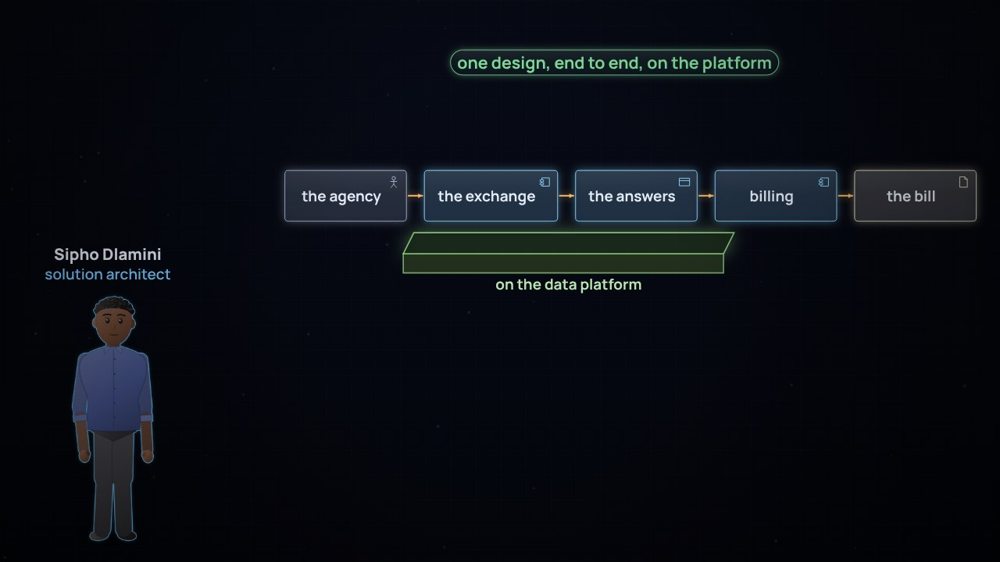

← Anterior · Película 4 de 8
Donde se encuentra con las aplicaciones
Cada flujo por la ruta más simple, más barata y más fácil de gobernar, y todo flujo en un solo mapa que ambos equipos mantienen.
Temas › Arquitectura empresarial › Arquitectura de plataforma y de soluciones
En la empresa de energía, una cuenta abre todas las puertas de la plataforma de datos, y si el regulador pregunta quién leyó los datos bancarios, el registro solo nombra esa cuenta. Ravi Menon da a cada trabajo y persona su identidad, con solo los permisos que necesita, revisada junto a los datos.
Pausa para pensar está activada: la película se detiene con una pregunta al final de los capítulos.
Descargar el video (en inglés)Archivos de subtítulosLeer el guion (en inglés)
¿Y ahora?
Las tres preguntas de Pausa para pensar, para una clase o un equipo. Abre una para ver la respuesta.
El lab de esta película, y sus situaciones, entre los 9 labs y las 16 situaciones de la serie. Tu avance queda en este navegador.
Desarma: Un salvoconducto propio →Tú decides: 2 situacionesTodos los labs
Película 5 de 8.
← Anterior · Película 4 de 8
Cada flujo por la ruta más simple, más barata y más fácil de gobernar, y todo flujo en un solo mapa que ambos equipos mantienen.

Siguiente · Película 6 de 8 →
Cada solución planeada de principio a fin: su contexto, sus cualidades, sus opciones y el porqué, por escrito.